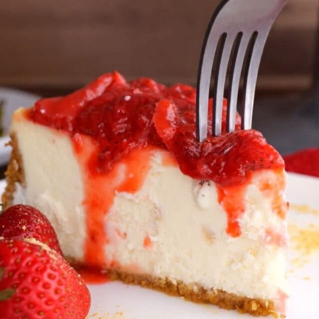

Home
Easy Strawberry Topping Recipe

Description
Ingredients
- 1 pound strawberries, sliced
- 1/4 cup sugar
- 1 teaspoon vanilla extract
Steps
- Place a medium pot on the stove on medium heat.
- Add the strawberries, sugar, and vanilla to the pot and cook for 18-20 minutes or until thickened, stirring frequently.
Back to Home